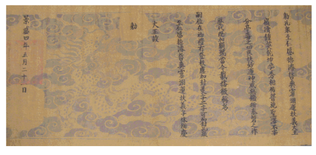
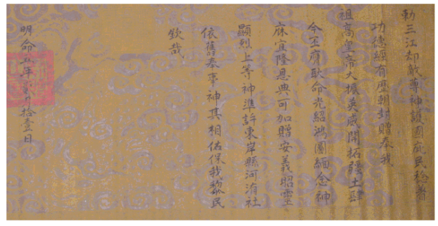
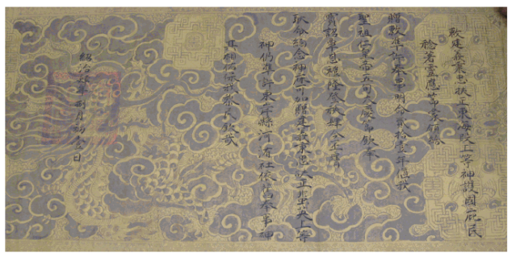

PHẦN PHỤ LỤC

Chú thích: Sắc phong viết bằng chữ Hán theo cách viết cổ, không có dấu chấm, dấu phẩy ngắt câu, cách đọc từ trái sang phải và từ trên xuống dưới, tác giả đã chụp nguyên bản sắc phong hiện vẫn lưu giữ ở đình làng Hà Vỹ, tất cả có 42 sắc phong nhưng chỉ đưa vào sách 10 bản của 9 vị Vua ban cho 5 vị thánh ở đình làng. 10 bản sắc phong này đã được tác giả in mầu và phóng to cỡ 90x65cm cho vào khung kính rồi treo ở trong đình Hà Vỹ để nhân dân trong làng và khách thập phương vào đình chiêm ngưỡng
1.1. Sắc phong của vua Lê Hiển Tông (niên hiệu Cảnh Hưng) ban cho Thánh Thuỷ Hải năm 1783

Bản phiên âm Hán Việt:
SẮC THỦY HẢI ĐẠI VƯƠNG NAM THIÊN DỤC TÚ BẮC NHẠC TRUNG ANH TÍCH HỒNG HY NHI HUỆ NHẤT PHƯƠNG DÂN THẤT GIA TƯ KHÁNH THẦN HUYỀN HÓA NHI DỰC TRỌNG HI VẬN MIẾU XÃ ĐIỆN AN MẶC PHÙ KỲ TRỨ ANH THANH HIỂN TẶNG HẠP LONG HUY HIỆU VI
TỰ VƯƠNG TIẾN PHONG VƯƠNG VỊ LÂM CƯ CHÍNH PHỦ LỄ HỮU ĐĂNG TRẬT ỨNG GIA PHONG MỸ TỰ TAM TỰ KHẢ GIA PHONG THỦY HẢI TẬP PHÚC HƯNG BÌNH TÁN TRỊ ĐẠI VƯƠNG CỐ SẮC
CẢNH HƯNG TỨ THẬP TỨ NIÊN THẤT NGUYỆT THẬP NHỊ LỤC NHẤT
Bản phỏng dịch:
Sắc phong: Ban cho Thủy Hải Đại vương. Trời Nam sáng đẹp, núi Bắc linh thiêng, ban cho phúc lớn, ơn khắp một phương, dân chúng mọi nhà mừng vui. Thần huyền hóa giúp ơn lớn để cho lăng miếu xã tắc được thờ cúng bình yên, mặc nhiên danh thơm tỏa khắp. Vậy hiển tặng để mở vận tốt lành. Kế tục được tiến phong Vương. Ở ngôi Vua từ trên xem xét làm lễ gia phong hạng bậc cho các tôn Thần thấy ứng gia phong với ba chữ đẹp, xứng được phong thêm: Thủy Hải tập phúc, hưng bình, tán trị Đại vương. Nay ban sắc này.
Ngày 26 tháng 7 năm thứ 44 niên hiệu Cảnh Hưng tức năm Quí Mão 1783
Chú thích: Vua Lê Hiển Tông (1717- 1786) ở ngôi (1740-1786) lấy niên hiệu là Cảnh Hưng
1.2 Sắc phong của Vua Nguyễn Huệ - Quang Trung ban cho Thánh Đăng Giang năm 1792

Bản phiên âm Hán Việt:
SẮC ĐĂNG GIANG DỤ HUỐNG TUY KHÁNH HIỂN LINH PHÙ CẢM THÔNG MẪN ĐẶC ĐẠT ĐẠI VƯƠNG TAM QUANG DỰNG TÚ TỨ CẢNH PHÂN PHÙ LIÊM NGŨ KHÁNH DĨ TÍCH DÂN TRƯỜNG HƯỞNG THIÊN VẠN THẾ XUÂN TỰ THU THƯỜNG CHI BÁO DIỆP BÁCH LINH NHI PHÙ VẬN THỊ BỒI ỨC VẠN NIÊN BÀN AN HỎA XÍ CHI CƠ BANG PHÙ NẪM TRỨ HUYỀN CÔNG BIỂU HIỆN HẠP GIA HUY HIỆU VI
HOÀNG GIA DƯ ĐỒ HỖN NHẤT LỄ ĐƯƠNG GIA TRẬT ỨNG GIA PHONG MỸ TỰ TAM TỰ KHẢ GIA PHONG ĐĂNG GIANG DỤ HUỐNG TUY KHÁNH HIỂN LINH PHÙ CẢM THÔNG MẪN ĐẶC ĐẠT ANH NGHỊ CƯƠNG ĐOÁN CHÍNH TRỰC ĐẠI VƯƠNG CỐ SẮC
QUANG TRUNG NGŨ NIÊN LỤC NGUYỆT NHỊ THẬP NGŨ NHẬT
Bản phỏng dịch:
Sắc phong. Ban cho Đăng Giang dụ huống, tuy khánh, hiển linh, phù cảm, thông mẫn, đặc đạt, Đại vương. Ánh tam quang rực rỡ, Bốn cõi phân đều hoà hợp. Năm phúc tốt lành ban khắp muôn dân để được hưởng lâu dài nghìn vạn đời xuân thu cúng tế, báo đáp ơn sâu. Thâu góp khí thiêng, giúp cho thời vận, đắp bồi cơ nghiệp muôn vạn năm như bàn thạch vững bền. Vốn từ lâu huyền công hiển đạt đã được phong thêm danh hiệu. Nay Hoàng gia nước nhà đã thu về một mối. Lễ gia phong hạng bậc cho các tôn Thần thấy ứng gia phong với ba chữ đẹp. Vậy xứng được phong thêm: Đăng Giang dụ huống, tuy khánh, hiển linh, phù cảm, thông mẫn, đặc đạt, anh nghị, cương đoán, chính trực Đại vương. Nay ban sắc này
Ngày 26 tháng 6 năm thứ 5 niên hiệu Quang Trung - tức năm Nhâm Tý 1792
Chú thích: Nguyễn Huệ (1752-1792) ở ngôi (1788- 1792) lấy niên hiệu là Quang Trung
1.3 Sắc phong của Vua Nguyễn Quang Toản (niên hiệu Cảnh Thịnh) ban cho Thánh Khổng Chúng năm 1796

Bản phiên âm Hán Việt:
SẮC KHỔNG CHÚNG TRÍ NHÂN THỊNH ĐỨC TUẤN TRIẾT SẢNG LINH DỰC VẬN PHÙ NGHĨA ĐẠI VƯƠNG LĨNH ĐỘC CHUNG ANH CÀN KHÔN DỰNG TÚ TƯƠNG HỮU PHỔ THÍ THÁNH TRẠCH BẤT TỂ PHÂN ĐÌNH ĐỘC CHI CÔNG KHUÔNG PHÙ DIỆU VẬN THẦN UY VÔ CƯƠNG DIỄN THÁI BÀN CHI TỘ LỊCH ĐẠI KÝ GIA HIỂN HIỆU ĐƯƠNG KIM ĐÁI BÁ HUY XƯNG VI TỰ VỊ TẠI SƠ LỄ HỮU ĐĂNG TRẬT ỨNG GIA PHONG MỸ TỰ NHỊ TỰ KHẢ GIA PHONG KHỔNG CHÚNG TRÍ NHÂN, THỊNH ĐỨC TUẤN TRIẾT SẢNG LINH DỰC VẬN PHÙ NGHĨA, PHÙ HƯU DIỄN KHÁNH ĐẠI VƯƠNG CỐ SẮC
CẢNH THỊNH TỨ NIÊN NGŨ NGUYỆT NHỊ THẬP NHẤT NHẬT
Bản phỏng dịch:
Sắc phong. Ban cho Khổng Chúng trí nhân, thịnh đức, tuấn triết, sảng linh, dực vận, phù nghĩa Đại vương. Sông núi linh thiêng, đất trời rực rỡ, ơn của Thánh thấm khắp mọi nơi, giúp cho Thần uy danh không cùng làm cho vận nước nối đời thịnh trị vững bền. Trải qua các triều đại đã được phong hiệu tôn kính vẻ vang, Buổi đầu nối ngôi làm lễ phong bậc cho các tôn thần, thấy ứng gia phong với hai chữ đẹp, vậy xứng được phong thêm: Khổng Chúng trí nhân, thịnh đức, tuấn triết, sảng linh, dực vận, phù nghĩa, phù hưu, diễn khánh, Đại vương. Nay ban sắc này.
Ngày 21 tháng 5 năm thứ 4 niên hiệu Cảnh Thịnh – tức năm Bính Thìn 1796
Chú thích: Nguyễn Quang Toản (1783-1802) con trưởng của Nguyễn Huệ ở ngôi (1793-1802) lấy niên hiệu là Cảnh Thịnh
1.4. Sắc phong của Vua Minh Mạng ban cho Thánh Tam Giang năm 1824

Bản phiên âm Hán Việt:
SẮC TAM GIANG KHƯỚC ĐỊCH TÔN THẦN HỘ QUỐC TÝ DÂN NẪM TRỨ CÔNG ĐỨC KINH HỮU LỊCH TRIỀU PHONG TẶNG PHỤNG NGÃ THẾ TỔ CAO HOÀNG ĐẾ ĐẠI CHẤN ANH UY KHAI THÁC CƯƠNG THỔ TỨ KIM PHI ỨNG CẢNH MỆNH QUANG THIỆU HỒNG ĐỒ DIỄN NIỆM THẦN HỮU NGHI LONG ÂN ĐIỂN KHẢ GIA TẶNG AN NGHĨA CHIÊU LINH HIỂN LIỆT THƯỢNG ĐẲNG THẦN CHUẨN HỨA ĐÔNG NGÀN HUYỆN HÀ VỸ XÃ Y CỰU PHỤNG SỰ THẦN KỲ TƯƠNG HỮU BẢO NGÃ LÊ DÂN KHÂM TAI
MINH MẠNG NGŨ NIÊN NHỊ NGUYỆT THẬP NHẤT NHẬT
Bản phỏng dịch:
Sắc phong. Ban cho Tam Giang khước địch tôn thần vì Ngài đã giúp nước che chở dân công đức lâu năm đã được nhiều Triều đại phong tặng. Vâng lệnh Thế tổ Cao Hoàng đế uy danh hiển hách mở mang bờ cõi. Theo lệnh (sáng suốt) đó mà gánh vác việc lớn để nối nghiệp vẻ vang, nghĩ đến công Thần báo đáp ơn sâu. Vậy xứng được tặng thêm: An nghĩa, chiêu linh, hiển liệt Thượng đẳng thần. Chuẩn y cho xã Hà Vỹ, huyện Đông Ngàn theo đó phụng thờ với nghi lễ như xưa. Thần ban phúc cứu giúp bảo vệ dân lành. Khâm lệnh.
Ngày 11 tháng 2 năm thứ 5 niên hiệu Minh Mạng - tức năm Giáp Thân 1824
Chú thích: Nguyễn Phúc Đảm (1789- 1840) là con thứ của Nguyễn Ánh ở ngôi (1820-1840) lấy niên hiệu là Minh Mạng
5. Sắc phong của Vua Thiệu Trị ban cho Thánh Đông Hải Đoàn năm 1844
